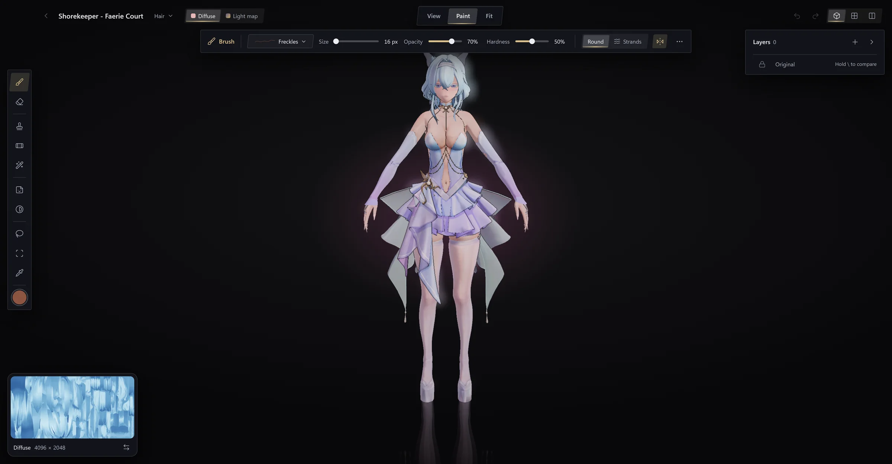

Guides · Paint a mod's textures
Getting startedComing from WWMIPlay with OvertoneAdd your modsMix outfits and loadoutsShare a modTimbre on a Mac or LinuxHow to create a modEdit a mod in BlenderPaint a mod's texturesWrite a descriptionWhen a mod does not draw rightGuides/Make mods
Paint a mod's textures
Paint on a character in Timbre: tattoos, freckles, recolours and repairs, in layers that never touch the mod's own textures, seen in game as you work.

Change how a mod looks without leaving Timbre: paint straight on the character, and the game shows each change a moment later. Compared with editing texture files in an image editor:
- You paint on the body, not on a flat sheet. A stroke is the same size everywhere and crosses UV seams whole.
- Every texture follows. Filling over a logo also fixes the normal map and light map under it.
- Nothing is lost. Your work is kept as layers over the mod's own textures. Turn a layer off, or all of them, and the mod is as it was.
- No export. There is no DDS to save, no mipmaps to build and no compression to pick: Paint does that for you.
- The mod is a dump you made (How to create a mod) or a mod you added through Timbre (Add your mods).
- To see your changes in game while you paint, start the game with Overtone (See your changes in game).
Freckles on a character's shoulders, start to finish, in about a minute.
- In Timbre, open a mod of the character and press Model.
- Press Paint at the top of the model window, or press P.
- At the top, open the part's name and pick the part with her bare skin, such as the body.
- Press B for the brush. At the left of the bar at the top, open the brush's preset (it reads Custom) and pick Freckles.
- Press I, then click her skin on the texture in the corner to take its colour. In the colour well at the foot of the tools, make it a little darker.
- Press B again, then drag across her shoulder. A layer called
Brush 1appears on the right. - Look at the game: the freckles are there. The top bar reads Saved.
To take them back, hide the layer with its eye, or press Ctrl+Z.
Three ideas carry everything else.
-
The mod's own textures are never changed. They are the bottom layer, Original. Everything you do is a layer above it, and the game draws the result. Hold \ to see the texture without your layers.
-
A part wears several textures, painted together. You pick one to paint on at the top:
Texture What it holds Diffuse The colours you see Normal map Small bumps and creases, such as stitching Light map How the surface takes light and shadow ID map Which material each spot is, such as skin, cloth or metal Highlight The shine on hair, on a hair part Fill mends every texture at once, so a filled-over logo leaves no bump behind. Heal and Clone mend only the texture shown: switch to the Normal map and go over the spot again.
-
You can paint on the model or on the flat texture. Tab swaps the two; the model view shows the texture small in a corner, and the buttons at the top right show either large, or both side by side. On the model a stroke crosses seams whole; on the texture, 0 fits it to the window. Picking a colour, an Area or a Lasso works on the texture only: on the model those turn the camera.
- Press V (Place a picture), then On the model, and choose a PNG with a transparent background.
- It lands on the part in view. Click a part to move it there; drag the box to move it, its corners to resize it.
- In the bar, set its Size, Turn and Mirror.
- To make it raised, like a scar or stitching, set Relief from to Normal map or Height.
- Press Done.
On the model the picture wraps around the body and over seams. If the spot is out of view, turn the model to it first.
- Press A (Adjust).
- In the bar at the top, pick Recolour. A Recolour layer is added.
- Press the eyedropper beside From, then click the colour to change on the texture.
- Set To to the new colour. Widen Range to catch more shades. Softness, in the layer's settings, blends the edges.
Other adjustments change Hue, Saturation and Brightness, Curves for Shadows, Midtones and Highlights, or map light and dark to two new colours (Gradient map).
To change only part of the texture, open the layer's Limit to and pick an Area (click it on the texture; Add an area adds more) or draw a Lasso around it.
| What | Do this |
|---|---|
| A spot or scar on skin | Press J (Heal), Alt+click clean skin nearby, then paint over the mark |
| A logo or pattern on cloth | Press G (Fill) and paint over it: it is filled from around it, on every texture |
| A copy of something exact | Press S (Clone), Alt+click the spot to copy, then paint where it goes |
- Press B (Brush), then open Preset in the bar.
- Pick one: Soft round, Hard round, Airbrush, Pencil, Freckles or Fine hair.
- Pick a colour from the well at the foot of the tools, or press I and click a colour on the texture.
- Press B again, and paint. Turn on Both sides to mirror each stroke to the other side of the body.
Fine hair has a Strands tip that lays single hairs along your stroke, raised on the normal map. Under More, a pen can make a lighter touch thinner (Pressure sizes) or fainter (Pressure fades). To keep your own brush, press Keep this brush and name it.
On a texture of values rather than colours, such as the Light map, the well at the foot of the tools sets each value to paint instead of a colour. On an ID map, turn its value on in the well before you paint; it takes a value only where a stroke covers most of a spot, so materials keep sharp edges.
Layers are listed on the right, top first, with Original at the bottom.
- A tool makes its layer. A stroke goes into the chosen layer when it is the same tool's, on the texture shown; otherwise Paint adds a layer for you, and a note says so with Undo. Each layer keeps what you did, so a stroke can be taken back long after.
- Add offers a Paint layer, an Image on the sheet, a Decal on the model or an Adjustment.
- Choosing a layer. Click it, and set its Opacity. Double-click it, or press its Layer settings button, for the texture it paints on (Map) and where it shows (Limit to: All, an Area or a Lasso), with Rename, Duplicate and Delete.
- Hiding a layer. Its eye shows or hides it.
Paint saves by itself after every change. The top bar says Saving, then Finishing once the game can show it, then Saved once the finer version is done. The game shows the change a moment after Finishing. If it reads Not saved, point at it for why.
The mod's own files are never changed. Ctrl+Z undoes and Ctrl+Shift+Z redoes (⌘ on a Mac) while the part is open; your layers stay after you close it, but this list of steps does not.
The tools are down the left side; the bar at the top shows the settings of the tool in hand.
| Tool | Key | What it does |
|---|---|---|
| Brush | B | Paints colour, or the values of the texture shown |
| Eraser | E | Takes back what the chosen layer painted; with none chosen, the bar says Choose a layer first |
| Clone | S | Copies from another spot: Alt+click sets where from; Aligned or Fixed in the bar |
| Heal | J | Copies from another spot and blends it in: for scars, spots and seams |
| Fill | G | Paint over something, and it is filled from what is around it |
| Place a picture | V | Puts a PNG on the model or the sheet: a tattoo, a logo |
| Adjust | A | Adds a layer that changes colours under it |
| Lasso | L | Draws an outline; then limit a layer to it in the bar |
| Area | W | Picks whole areas, such as all the skin (Shift adds more); then limit a layer to them in the bar |
| Pick a colour | I | Takes the colour under the pointer |
| To | Press |
|---|---|
| Open or leave Paint | P |
| Switch between model and sheet | Tab |
| Fit the sheet to the window | 0 |
| See the texture without your layers | Hold \ |
| Set where Clone and Heal copy from | Alt+click |
| Add another area, with Area | Shift+click |
| Open the ring of brushes; size the brush | Right-click without dragging; turn the wheel over its middle |
| Turn the model | Drag with the right button |
| Move the view | Drag with the middle button, or Shift+drag |
| Zoom | Turn the wheel |
| Undo; redo | Ctrl+Z; Ctrl+Shift+Z (⌘ on a Mac) |
| Stop what you are doing | Esc |
- Paint the game's own parts. Only parts the mod replaces are offered.
- Save on Zenless Zone Zero. Its layers show in Timbre but are not saved yet.
- Move makeup between characters or match skin tone automatically.
- Keep undo after closing the part. Your layers stay; the list of steps does not.
- Edit a mod in Blender: change the shape instead of the look.
- Mix outfits and loadouts: wear your painted mod with others.
- When a mod does not draw right.
| What | Where in the mod's folder |
|---|---|
| Your layers |
.overtone/stacks/: one .toml per texture set, and its strokes and pictures beside it |
| What the game draws |
.overtone/built/baked/, made from your layers on each save. Never edit it. |
In the sheet view's bar, Overlaps shows spots several places on the body share, such as a texture used for both arms: painting one paints the others. Seams shows where the body's edges split on the flat texture.
Applies to Timbre 26.1028.0 and Overtone 26.1028.0.